한줄 요약 — AES는 지형·암석·불순물·물·트럭을 멀티모달로 인지하고, 2.5D 높이맵에서 굴착 접촉점과 이동거리를 학습한다. 이어 IRL로 얻은 인간 동작 비용과 장애물 비용을 STOMP에 결합해 충돌 없는 굴착·덤핑 궤적을 만들고 drive-by-wire 유압 굴착기로 실행하는 ROS 기반 통합 시스템이다.
1.연구 배경 및 동기
위험 작업자를 대체하면서 숙련자 수준의 처리량을 유지하는 통합 자동화
광산·건설·폐기물 처리는 낙석, 지반 붕괴, 독성 분진과 극단 온도가 겹치는 위험 작업이다. 논문은 사람을 위험구역에서 제거하면서 실제 생산라인의 처리량을 유지하는 것을 목표로 삼는다. 굴착 파일은 매 사이클 형상이 바뀌고 재질도 다르며, 트럭 위치와 물·불순물·암석도 달라지므로 고정 경로나 단일 센서만으로 장시간 무인 운전하기 어렵다.
기존 연구는 제한된 토양·트럭에서 단일 작업을 수행하거나 계획·힘제어·암석 분할을 따로 검증했다. AES는 3D LiDAR와 RGB-D 인지가 지형·재질·장애물·트럭을 해석하고 작업계획과 동작계획을 직접 구동하는 perception-centered 구조다. 사람 시연의 목표·동작 패턴을 최적화 궤적과 결합해 여덟 시험 시나리오, 폐기물 처리라인과 광산 배치로 확장했다.
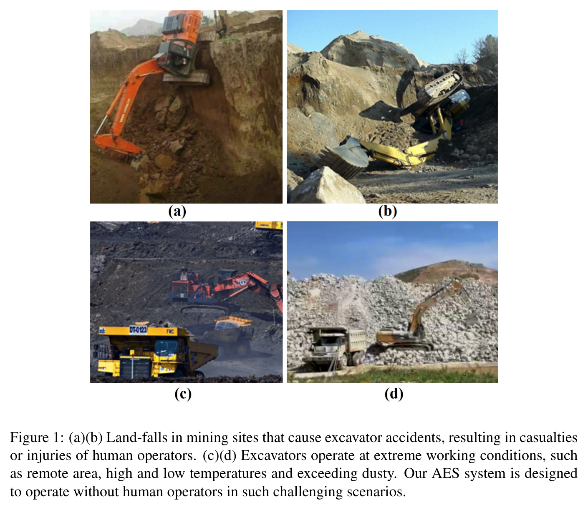
원문 Figure 1 · PDF p.3 — Figure 1: (a)(b) Land-falls in mining sites that cause excavator accidents, resulting in casualties or injuries of human operators. (c)(d) Excavators operate at extreme working conditions, such as remote area, high and low temperatures and exceeding dusty. Our AES system is designed to operate without human operators in such challenging scenarios.
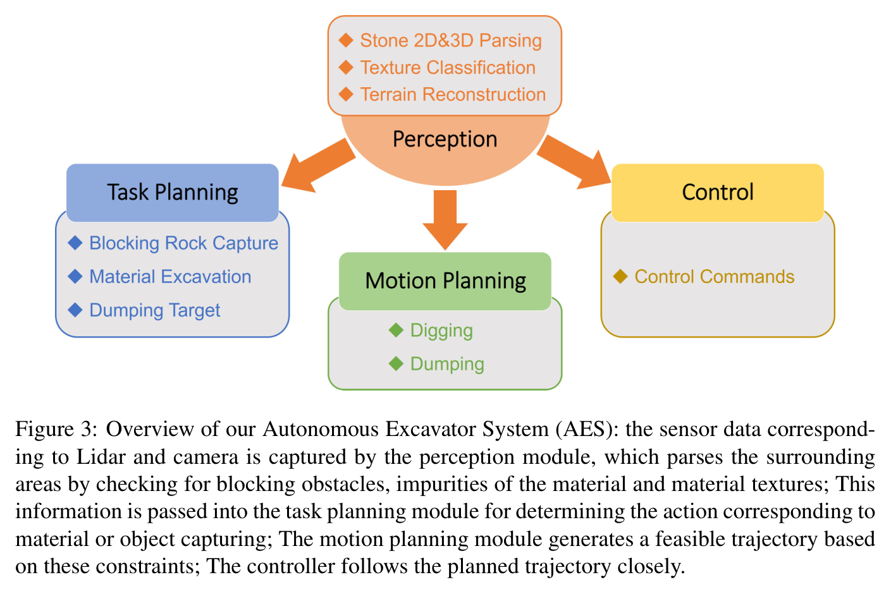
원문 Figure 3 · PDF p.9 — Figure 3: Overview of our Autonomous Excavator System (AES): the sensor data correspond- ing to Lidar and camera is captured by the perception module, which parses the surrounding areas by checking for blocking obstacles, impurities of the material and material textures; This information is passed into the task planning module for determining the action corresponding to material or object capturing; The motion planning module generates a feasible trajectory based on these constraints; The controller follows the planned trajectory closely.
선행 연구의 한계
초기 autonomous loading system은 단일 트럭 모델과 균질 토양에 의존했다.
기존 작업계획·힘제어는 일부 단계만 다뤄 전체 스택의 장시간 강건성을 입증하지 못했다.
선행 암석 분할·버킷 이상 감지는 완전 자율 적재에 필요한 다층 인지를 제공하지 않았다.
파일 형상과 트럭 자세가 매번 바뀌므로 고정 궤적으로 지속 운전하기 어렵다.
이 연구의 기여
LiDAR·카메라 인지를 중심으로 계획·제어를 연결한 ROS 기반 AES를 제안했다.
높이맵 목표 선택, IRL 비용과 STOMP를 결합한 계층형 계획기를 구성했다.
여덟 복합 시나리오와 실제 배치에서 24 HPI 및 36.25 m³/h를 보고했다.
6.5톤·49톤 굴착기에 적용 가능한 파라미터화 하드웨어 구성을 제시했다.
2.방법론 및 시스템 구성
AES는 응용, 인지, 계획, 제어의 네 ROS 모듈을 동시에 실행한다. 인지가 지형·장애물·재질·트럭 상태를 만들면 상위 계획은 굴착 목표를, 하위 계획은 관절궤적을 정한다. 제어기는 CAN 기반 drive-by-wire 장비로 명령을 보내고 비상시 사람 제어로 복귀한다.
Mask R-CNN과 RGB-D·LiDAR 깊이를 결합해 암석의 자세와 3D 경계상자를 만들고, semantic segmentation으로 불순물·물을 표시한다. Deep Encoding Pooling Network는 재질을 여덟 클래스로 분류하고, 트럭은 사전 점군 템플릿을 온라인 LiDAR와 ICP 정합해 자세를 구한다. 출력은 제거 대상·회피영역·덤핑 위치로 계획기에 전달된다.
높이맵 네트워크가 POA의 종·횡 좌표와 버킷 이동길이를 출력한다. 사람 굴착 궤적에서는 IRL로 종단 오차와 변화율의 비용 가중치를 학습한다. 온라인에서는 POA로 시작·끝 관절자세를 구하고, 인간 동작 비용과 트럭·불순물 장애물 비용을 STOMP에 넣어 굴착·덤핑 궤적을 만든다.
처리 파이프라인
1
다중 센서 동기화와 장비 상태 취득
Huace RTK와 Honeywell 경사계로 위치·관절각을 얻고 Livox Mid-100 LiDAR, ZED RGB-D 자료를 ROS 노드에 공급한다.
D개 시연과 각 시연 주변 K개 샘플의 feature 차이를 이용해 인간 동작 패턴을 설명하는 비용 가중치를 찾는 convex optimization이다. 원문 PDF 26쪽.
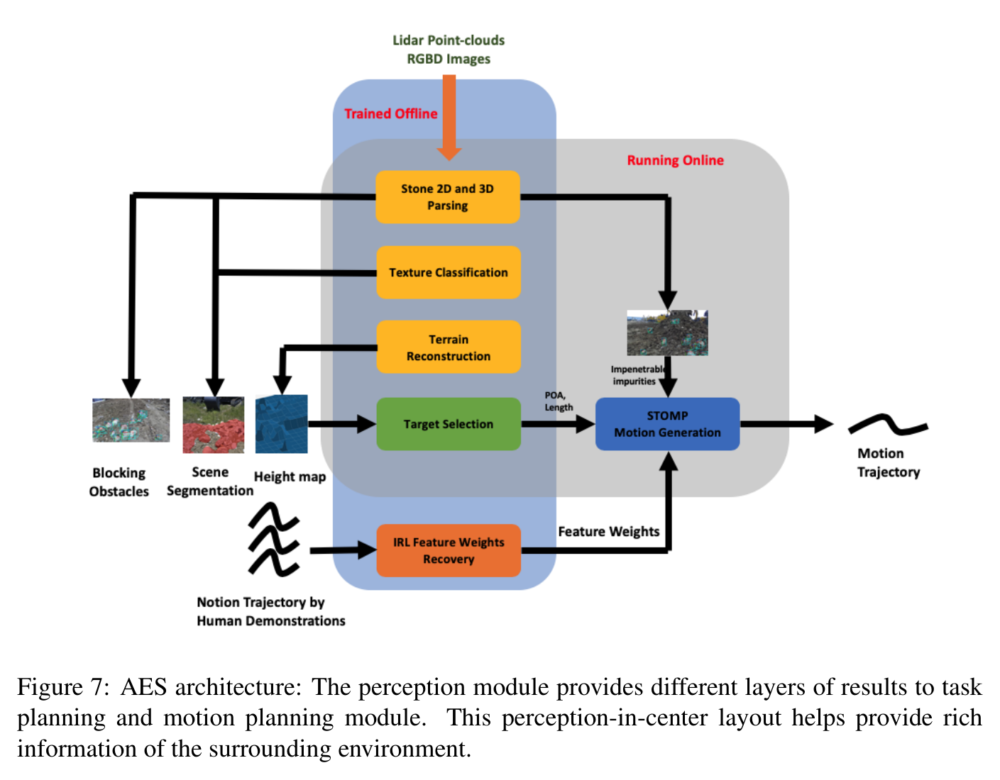
원문 Figure 7 · PDF p.22 — Figure 7: AES architecture: The perception module provides different layers of results to task planning and motion planning module. This perception-in-center layout helps provide rich information of the surrounding environment.
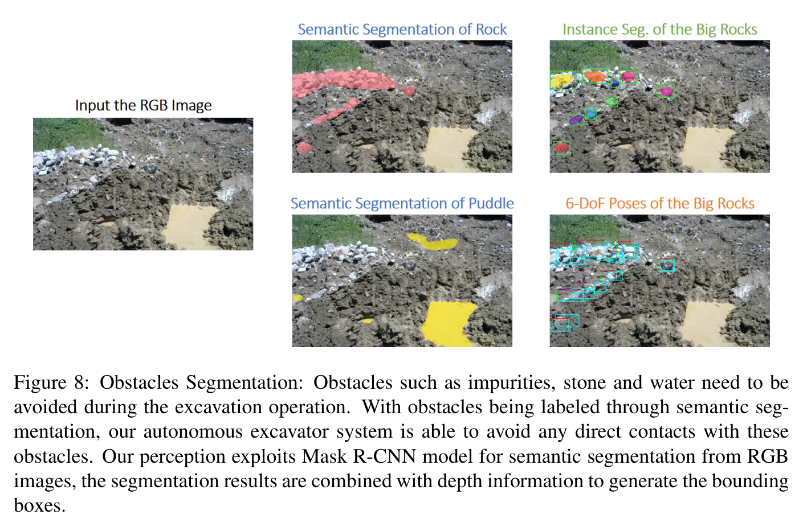
원문 Figure 8 · PDF p.23 — Figure 8: Obstacles Segmentation: Obstacles such as impurities, stone and water need to be avoided during the excavation operation. With obstacles being labeled through semantic seg- mentation, our autonomous excavator system is able to avoid any direct contacts with these obstacles. Our perception exploits Mask R-CNN model for semantic segmentation from RGB images, the segmentation results are combined with depth information to generate the bounding boxes.
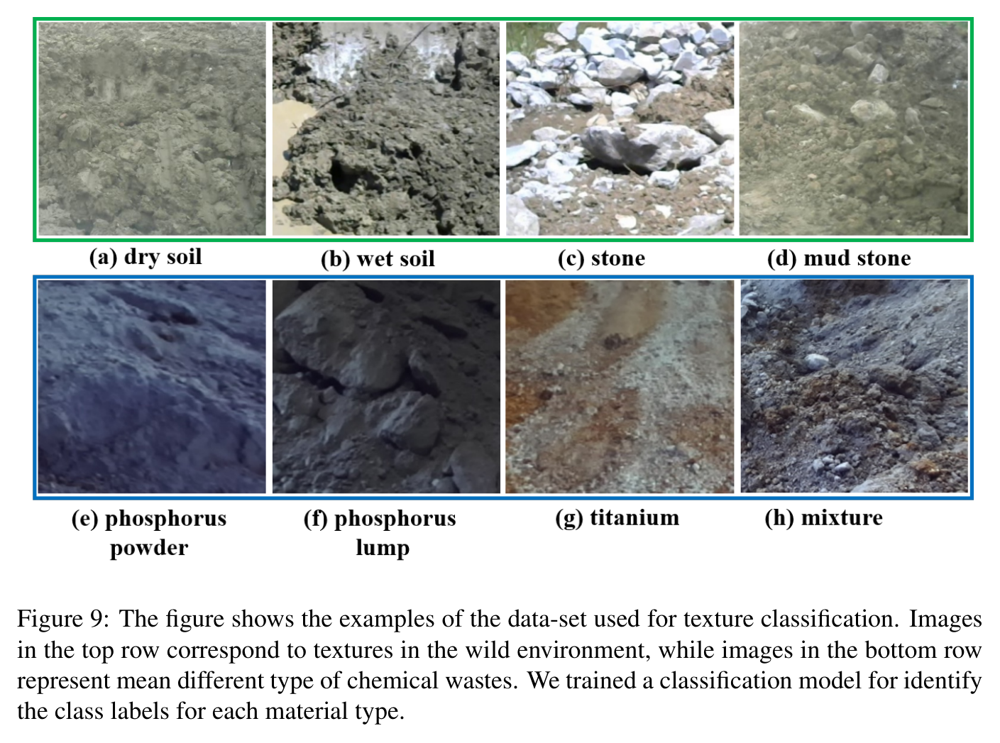
원문 Figure 9 · PDF p.25 — Figure 9: The figure shows the examples of the data-set used for texture classification. Images in the top row correspond to textures in the wild environment, while images in the bottom row represent mean different type of chemical wastes. We trained a classification model for identify the class labels for each material type.
3.핵심 기술
Perception-centered 모듈 결합
인지를 작업 선택과 궤적 비용을 바꾸는 중심 계층으로 둔다. 암석은 제거 작업, 물·불순물은 회피영역, 트럭은 덤핑 목표, 높이맵은 다음 굴착 위치로 변환된다.
큰 암석은 instance-level 3D pose와 크기로 계획기에 전달
물·불순물은 semantic obstacle cost로 전달
작업영역 침입 객체는 emergency stop 조건으로 사용
규모별 계층형 환경 인지
Mask R-CNN 분할과 깊이로 차단물의 3D geometry를 복원하고 재질은 texture network로 분류한다. 트럭은 점군 템플릿과 ICP로 metric pose를 얻는다.
암석 학습셋 4,000 instance
재질 데이터 7,563장과 8개 클래스
LiDAR-카메라 융합으로 의미와 거리 결합
목표와 운동을 나눈 계층형 계획
상위 네트워크는 높이맵에서 POA와 travel length를 정하고 하위 계획기는 관절궤적으로 구체화한다. 작업전략은 학습하면서 충돌 제약은 명시적으로 유지한다.
2.5D height map 기반 목표 입력
POA 종·횡 좌표와 이동거리 출력
IK로 시작·종단 관절자세 계산
IRL-STOMP 결합 동작 생성
IRL은 관절 종단오차와 변화율의 비용을 학습한다. STOMP는 이 비용과 새 장애물 비용을 함께 최적화해 인간 동작 패턴과 충돌 회피를 조정한다.
폐쇄형 실제 시험장에 6.5톤 compact 및 49톤 standard drive-by-wire 굴착기를 구성하고, 단순 적재부터 암석 제거·장애물·물 영역 조합까지 여덟 시나리오를 마련했다.
폐기물 재활용라인에서는 건식·습식 재료, 독성 분진, 주간·야간 조건에서 6.5톤 AES를 컨베이어 처리속도에 맞춰 24시간 연속 운전했다.
광산 현장에서는 큰 암석을 식별·제거하고 작은 암석을 트럭에 적재하는 작업에 AES를 배치했다. 다만 광산에 대한 별도 정량 표는 제시되지 않았다.
인지 학습은 암석 4,000 instance와 재질 이미지 7,563장(학습 6,720, 시험 843), 8개 재질 클래스를 사용했다.
실험 프로토콜
Scenario 1에서 균질 재료 적재-덤핑을 수행하며 scoop, swing to truck, dump, swing back의 네 단계 시간과 bucket fill rate를 숙련자와 비교했다.
Scenario 2~4는 각각 차단 암석 제거, 불순물·트럭·파일 회피, 물 영역 회피를 단독 평가했다.
Scenario 5~7은 지형조작-장애물, 지형조작-물, 장애물-물의 쌍을 결합했고, Scenario 8은 세 요소를 모두 포함해 전체 스택의 작업 선택과 회피를 시험했다.
실배치에서는 무개입 연속시간, 시간당 굴착-덤핑 횟수, 시간당 처리체적을 기록해 산업 생산라인 적합성을 확인했다.
비교 기준
Scenario 1의 숙련 인간 운전자
선행 autonomous loading system과 제한 시나리오용 자율굴착 구조는 정성적 관련연구 비교 대상이며 동일 조건 정량 baseline은 아니다.
평가 지표
굴착-덤핑 한 사이클 총시간과 scoop/swing/dump 단계시간
버킷 충전율(bucket fill rate)
시간당 굴착-덤핑 작업 횟수와 처리체적(m³/h)
사람 개입 사이 운전시간 HPI(hours per intervention)
재질 분류 정확도와 데이터셋 규모
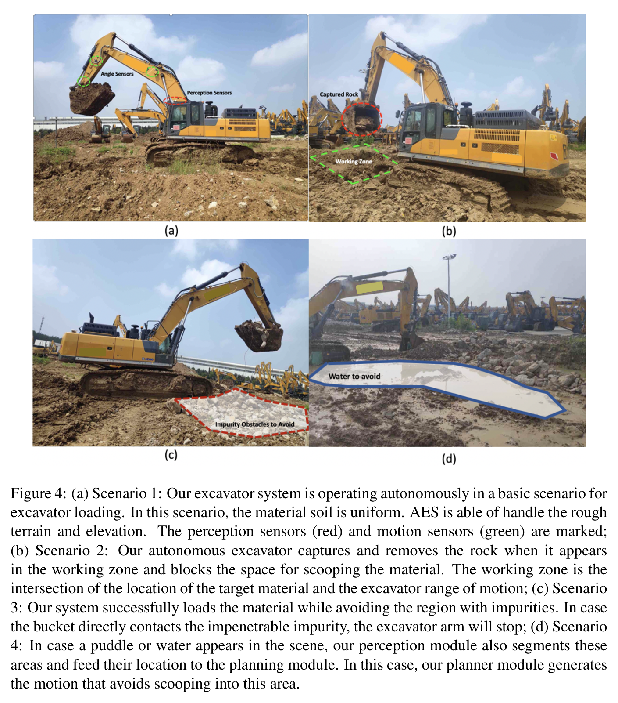
원문 Figure 4 · PDF p.12 — Figure 4: (a) Scenario 1: Our excavator system is operating autonomously in a basic scenario for excavator loading. In this scenario, the material soil is uniform. AES is able of handle the rough terrain and elevation. The perception sensors (red) and motion sensors (green) are marked; (b) Scenario 2: Our autonomous excavator captures and removes the rock when it appears in the working zone and blocks the space for scooping the material. The working zone is the intersection of the location of the target material and the excavator range of motion; (c) Scenario 3: Our system successfully loads the material while avoiding the region with impurities. In case the bucket directly contacts the impenetrable impurity, the excavator arm will stop; (d) Scenario 4: In case a puddle or water appears in the scene, our perception module also segments these areas and feed their location to the planning module. In this case, our planner module generates the motion that avoids scooping into this area.
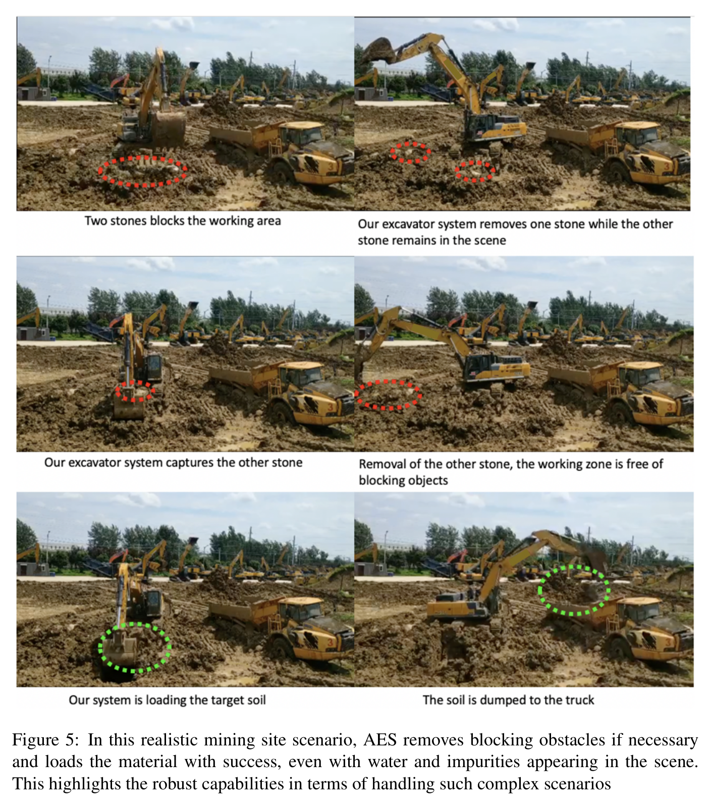
원문 Figure 5 · PDF p.16 — Figure 5: In this realistic mining site scenario, AES removes blocking obstacles if necessary and loads the material with success, even with water and impurities appearing in the scene. This highlights the robust capabilities in terms of handling such complex scenarios
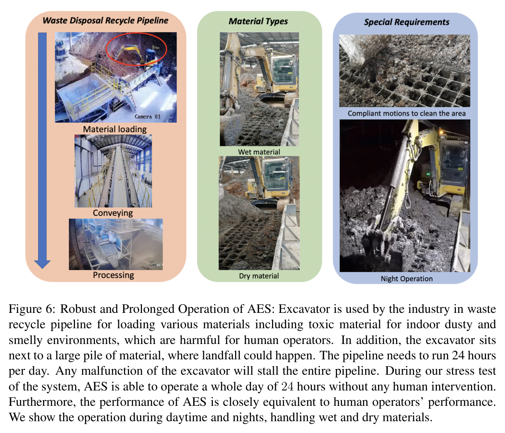
원문 Figure 6 · PDF p.18 — Figure 6: Robust and Prolonged Operation of AES: Excavator is used by the industry in waste recycle pipeline for loading various materials including toxic material for indoor dusty and smelly environments, which are harmful for human operators. In addition, the excavator sits next to a large pile of material, where landfall could happen. The pipeline needs to run 24 hours per day. Any malfunction of the excavator will stall the entire pipeline. During our stress test of the system, AES is able to operate a whole day of 24 hours without any human intervention. Furthermore, the performance of AES is closely equivalent to human operators’ performance. We show the operation during daytime and nights, handling wet and dry materials.
핵심 결과 해석
기본 적재에서 AES는 scoop 5.5초, truck swing 8.5초, dump 5.4초, swing back 5.7초로 총 25.0초였다. 숙련자는 총 23.6초였다. AES는 약 6% 느렸지만 버킷 충전율이 105%로 사람의 86%보다 높아 시간당 처리량은 대체로 동등했다.
6.5톤 AES는 폐기물 라인에서 24 HPI, 시간당 145회와 36.25 m³를 달성했고 건식·습식 재료 및 주·야간을 포함했다. 여덟 시나리오에서는 암석 제거, 불순물·트럭·파일·물 회피를 수행했다. 8종 재질 시험 843장은 100%였지만 폐쇄형 데이터셋 결과다.
생산성 근거는 폐기물 배치에 강하지만 광산은 성공률·개입률·처리량이 없다. 여덟 시나리오도 반복 수와 실패 통계가 없어 복합환경 일반화는 시연 근거로 해석해야 한다.
정량 결과
평가 항목
정량 결과
조건·맥락
원문 근거
무개입 연속운전
24 HPI
폐기물 재활용라인에서 24시간 사람 도움 없이 운전
PDF p.17
굴착-덤핑 처리율
145 operations/hour
6.5톤 AES 폐기물 처리 배치
PDF p.17
시간당 처리체적
36.25 m³/hour
6.5톤 AES 폐기물 처리 배치
PDF p.17
AES 적재 사이클
25.0 s
기본 적재 Scenario 1; 숙련자 23.6 s 대비 약 6% 증가
PDF p.14
AES 버킷 충전율
105%
기본 적재 Scenario 1; 숙련자 86%
PDF p.14
재질 분류 정확도
100%
8개 클래스, 7,563장 중 학습 6,720장·시험 843장
PDF p.23
암석 검출 학습자료
4,000 rock/stone instances
Mask R-CNN, NVIDIA 1080 GPU 4개로 2시간 학습
PDF p.21
실패 사례와 경계조건
버킷 끝이 관입 불가능한 불순물과 직접 접촉하면 굴착기 팔이 정지하므로, 해당 영역 미검출은 작업 중단으로 이어진다.
전체 성능이 인지 알고리즘 정확도와 LiDAR·카메라 하드웨어 신뢰성에 크게 좌우된다고 저자들이 명시했다.
눈·얼음은 인지뿐 아니라 계획·제어에도 새 문제를 만들지만 본 연구에서는 다루지 않았다.
광산 배치는 제시되지만 반복 수, 성공률, 개입 빈도 등의 정량 결과가 없어 장기 강건성을 폐기물 현장과 같은 수준으로 판단할 수 없다.
5.한계 및 향후 연구
현재 한계
인지 정확도와 센서 하드웨어 신뢰성이 전체 AES 성능을 지배하며, 인지 실패에 대한 확률적 불확실도나 안전보장식은 제시하지 않는다.
눈과 얼음 조건을 고려하지 않았고, 저자도 더 어려운 날씨·조명에서 인지·계획·제어를 평가해야 한다고 밝힌다.
재질 분류의 100% 정확도는 8개 폐쇄형 클래스와 843장 시험셋에 대한 값으로, 미지 재질·새 현장·센서 오염에 대한 일반화 증거가 아니다.
여덟 시나리오의 반복 횟수와 실패율, 광산 배치의 정량 생산성·개입 데이터가 없어 24 HPI 결과의 환경 간 재현성을 판단하기 어렵다.
굴착 목표 선택 네트워크의 시연 수, 학습 분할, 하이퍼파라미터와 목표오차가 보고되지 않아 학습 모듈의 독립 재현이 제한된다.
향후 연구
눈·얼음·강우·분진과 더 어려운 조명에서 LiDAR·RGB-D 신뢰도와 전체 작업성공률을 함께 평가한다.
개선된 LiDAR·카메라와 인지 알고리즘을 통합해 미검출이 계획·제어에 미치는 영향을 줄이고 센서 고장 시 안전정지 기준을 정량화한다.
미지 재질과 새 광산을 포함한 개방집합 평가를 추가하고, 인지 신뢰도·작업 성공률·개입률·HPI를 같은 로그에서 연결한다.
광산과 폐기물 현장에서 장비 크기별 장기 반복시험을 수행해 생산성뿐 아니라 충돌 근접, 불필요 정지, 부품·센서 고장을 보고한다.
6.한마디로 정리
핵심 방법은?
멀티모달 인지를 중심으로 높이맵 기반 목표 선택, IRL로 학습한 인간 동작 비용, 장애물 비용을 포함한 STOMP, drive-by-wire 제어를 계층적으로 통합했다.
AES는 암석을 제거 대상, 물·불순물을 회피 비용, 트럭을 덤핑 자세, 침입 객체를 emergency stop으로 번역한다. 센서 출력을 작업상태와 복구행동에 연결하는 구조가 장시간 HPI의 핵심이다.
사이클 시간뿐 아니라 버킷 충전율·개입시간·후속 공정 속도를 함께 평가해야 한다. 현장 적용에는 악천후·동적 작업자·토질 변화에 대한 개방집합 인지와 정지 후 복구가 필요하다.
LiDAR-카메라 의미·기하 융합을 굴착 가능도와 장애물 비용으로 직접 연결하는 perception-to-planning 인터페이스를 설계할 수 있다.
POA·이동거리의 상위 선택과 STOMP 관절궤적의 하위 생성을 분리하면 데이터 기반 전략과 명시적 안전제약을 동시에 유지할 수 있다.
HPI, m³/h, bucket fill rate를 함께 기록하면 연구용 성공률보다 산업 배치의 생산성·신뢰성을 더 직접 평가할 수 있다.
향후 시스템은 미지 물질·센서 오염을 감지했을 때 감속·재인식·안전정지·재계획으로 이어지는 복구 상태기계가 필요하다.
7.전체 그림·표
본문 핵심 위치에 배치하지 않은 원문 Figure와 Table을 원문 페이지 순서로 수록한다.
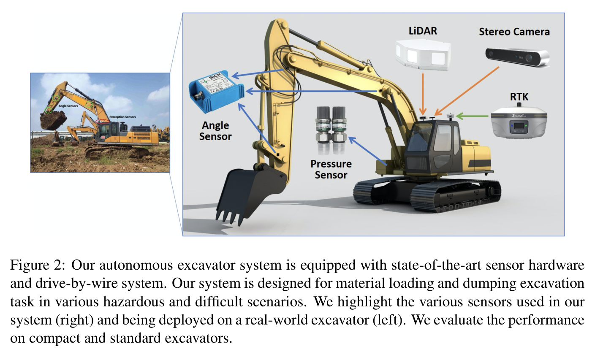
원문 Figure 2 · PDF p.6 — Figure 2: Our autonomous excavator system is equipped with state-of-the-art sensor hardware and drive-by-wire system. Our system is designed for material loading and dumping excavation task in various hazardous and difficult scenarios. We highlight the various sensors used in our system (right) and being deployed on a real-world excavator (left). We evaluate the performance on compact and standard excavators.
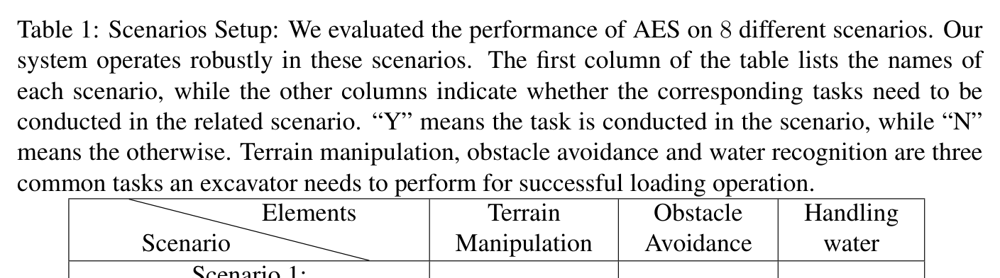
원문 Table 1 · PDF p.8 — Table 1: Scenarios Setup: We evaluated the performance of AES on 8 different scenarios. Our system operates robustly in these scenarios. The first column of the table lists the names of each scenario, while the other columns indicate whether the corresponding tasks need to be conducted in the related scenario. “Y” means the task is conducted in the scenario, while “N” means the otherwise. Terrain manipulation, obstacle avoidance and water recognition are three common tasks an excavator needs to perform for successful loading operation.
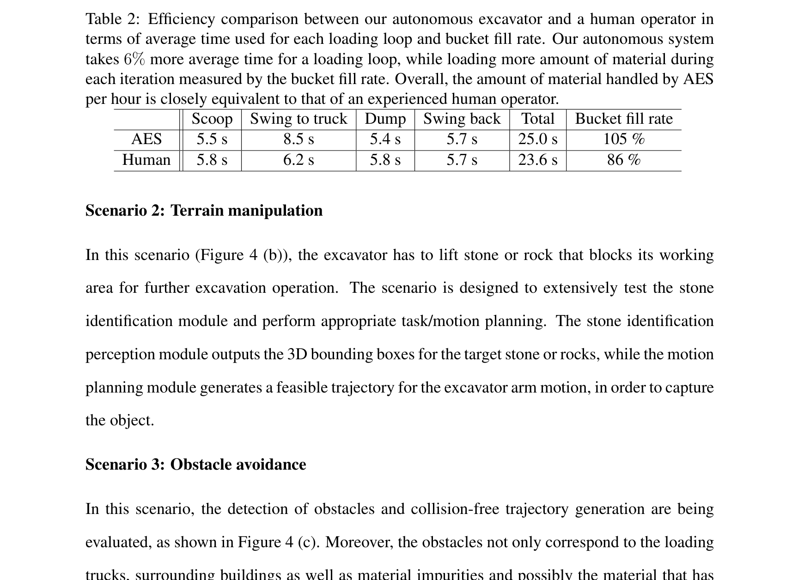
원문 Table 2 · PDF p.14 — Table 2: Efficiency comparison between our autonomous excavator and a human operator in terms of average time used for each loading loop and bucket fill rate. Our autonomous system takes 6% more average time for a loading loop, while loading more amount of material during each iteration measured by the bucket fill rate. Overall, the amount of material handled by AES per hour is closely equivalent to that of an experienced human operator.